I study quantum algorithms using geometry, Lie theory, and mathematical physics. My recent work concerns trainable observables, circuit expressivity, and transfer learning. I also work on learning-assisted quantum characterization and control.
Research Scientist, Brookhaven National Laboratory
Gauge-field strength as the curvature of a connection.
01 About
About
I am a Research Scientist at Brookhaven National Laboratory. My research focuses on quantum algorithms, particularly the geometry of circuits and observables, transfer learning, and learning-assisted quantum characterization and control.
I received a B.S. in mathematics and a Ph.D. in physics from National Tsing Hua University. My dissertation, Gravitational Theories with Torsion (2015), studied Poincaré gauge gravity, scalar-torsion cosmology, and higher-dimensional teleparallel gravity.
My earlier work includes reinforcement learning for adaptive radiotherapy at the University of Michigan, and theoretical machine learning at Academia Sinica: Layer Variational Analysis, optimal transport for domain adaptation, and generalized stochastic neighbor embedding. These studies use variational, geometric, and algebraic methods to analyze computational problems.
Education and research positions
Selected stages of my academic training and research.
2005B.S. in Mathematics, National Tsing Hua University
2005 — 2015General Relativity, Spacetime theory, Cosmology, Dark Energy bundles, connections, curvature
2015Ph.D. in Physics — torsion gravity, Poincaré gauge theory
2016University of Michigan — deep RL for radiotherapy
2019Academia Sinica — Layer Variational Analysis, optimal transport
2023Brookhaven National Laboratory — quantum algorithms
02 Research interests
Research interests
My main interests are mathematical methods for quantum algorithms, quantum inference and control, and the theory of learning.
i.
Algebra and topology for quantum error correction
Stabilizer subspaces, cellular maps, relative homology, and logical operators.
I study error-correcting subspaces through algebra and topology. For a surface code, boundary and coboundary maps generate commuting Pauli checks. Their common invariant subspace is the code; homology describes the logical transformations that the checks cannot distinguish.
Let \(K\) be a cellulated surface, \(A\) its rough boundary subcomplex, and \(C_n=C_n(K,A;\mathbb F_2)\). Qubits occupy the remaining edges. The cellular maps organize both local checks and global logical classes:
How does symmetry organize error-correcting subspaces?
For the relative chain groups above, let \(C^i=\operatorname{Hom}_{\mathbb F_2}(C_i,\mathbb F_2)\) and \(\delta^i\phi=\phi\circ\partial_{i+1}\). Assign \(n=\dim C_1\) edge qubits with Hilbert space \(\mathcal H=(\mathbb C^2)^{\otimes n}\).
The support maps \(Z:C_1\to\mathrm U(\mathcal H)\) and \(X:C^1\to\mathrm U(\mathcal H)\) label products of edge Pauli operators. They turn the cellular maps into checks:
\(v^\vee\in C^0\) is a vertex basis functional and \(f\in C_2\) a face. The Pauli commutation phase is the evaluation of an edge cochain on an edge chain.
The checks generate a finite abelian stabilizer group \(S\subset\mathrm U(\mathcal H)\), with \(-I\notin S\). Group averaging projects onto its invariant subspace, the trivial-character sector:
\(\mathcal H^S=\{\psi\in\mathcal H:g\psi=\psi\text{ for every }g\in S\}\). The second equation is the Knill–Laflamme condition for a specified error set \(\{E_a\}\), with \(c_{ab}\in\mathbb C\). An invariant or isotypic subspace must satisfy this additional condition to correct those errors.
Conceptual illustrations use AI-generated artwork. Figures from the papers are identified in their captions.
§2Ongoing
Quantum-logic spectroscopy and molecular control
Measurement and feedback for trapped molecular ions
How can we prepare a molecular state that we cannot observe directly?
Quantum-logic spectroscopy couples a molecular ion to a controllable atomic logic ion through shared motion. Raman pulses correlate molecular transitions with motional excitation; logic-ion readout then conditions the next control. I study such pulse-and-measurement sequences for molecular state preparation.
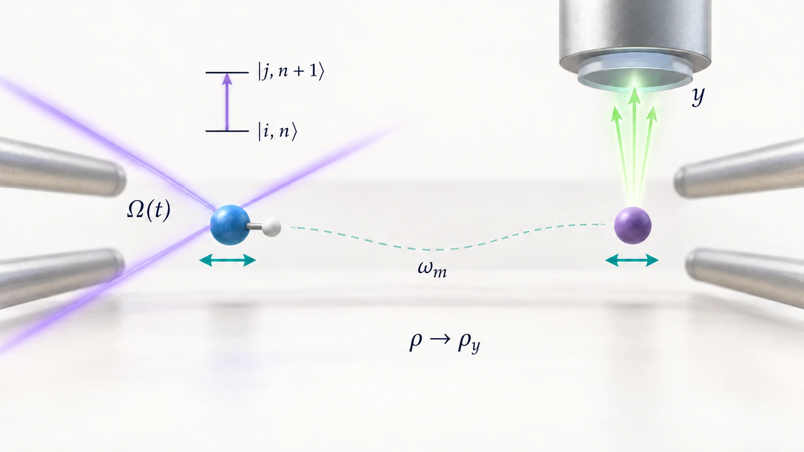
Physical setting\(\Omega(t)\) is the effective Raman Rabi envelope; \(\omega_m\) is the shared angular motional frequency. The inset shows \(|i,n\rangle\to|j,n+1\rangle\). Logic-ion outcome \(y\) conditions the molecular state \(\rho_y\); the dashed mode guide is schematic.
\(H_a\) acts on molecular internal states and shared motion. \(H_{\mathrm{mol}}\) is the internal Hamiltonian; \(I\) denotes the identity on each indicated space. The motional mode has angular frequency \(\omega_m\) and annihilation operator \(b\). Pulse \(a\) has duration \(\tau_a\); \(\mathcal T\) orders time evolution. The effective instrument \(\mathcal I_{a,y}\) includes evolution, readout \(y\), and reset. The conditional update requires \(p(y\mid a,\rho)>0\). \(\rho\) is the molecular state and \(|\psi_\star\rangle\) its target.
The control objective is to increase target-state fidelity under uncertain outcomes and an experimental time budget. This builds on established molecular QLS and learning-assisted control; the equations describe the general physical setting.
Phonon-induced quasiparticles · material sensitivity · error-correcting subspaces
How does one radiation event produce errors across a quantum chip?
Material sensitivity of superconducting quantum processors · ongoing
Energy deposited in a substrate produces phonons that can reach multiple superconducting electrodes. Above the pair-breaking threshold, they generate quasiparticles; tunneling across a junction increases relaxation and reduces coherence. I use Geant4/G4CMP-based modeling to study how materials and device geometry affect this process.
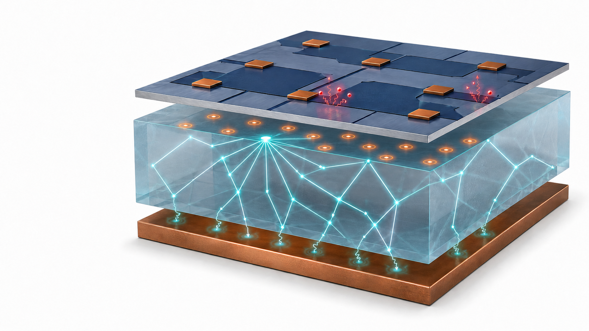
Device schematicRadiation-generated phonons propagate through the substrate and can break Cooper pairs in superconducting electrodes. The supplied artwork uses illustrative geometry and colors.
\(E_{\mathrm{ph}}\) is phonon energy and \(\Delta\) the superconducting gap. \(n_{\mathrm{qp}}\) is quasiparticle density; \(g_{\mathrm{qp}},r,s\) describe generation, recombination, and removal. \(x_{\mathrm{qp}}=n_{\mathrm{qp}}/n_{\mathrm{cp}}\) is normalized to the Cooper-pair density; \(\omega_{01}\) is angular transition frequency. \(\Delta\Gamma_1\) is the quasiparticle-induced excess relaxation rate; \(\Gamma_{1,b},\Gamma_\phi\) are baseline relaxation and total pure-dephasing rates. \(T_1,T_2\) are relaxation and coherence times. The rate expression is a standard-transmon, quasi-equilibrium model.
Geant4 models particle interactions and energy deposition; G4CMP supplies low-temperature charge and phonon transport. Quasiparticle kinetics and qubit-response models connect these simulations to decoherence. The concern is quasiparticle poisoning and loss of quantum information, rather than necessarily permanent electrode damage.
Bayesian Active Learning for Sample-Efficient and Symmetry-Aware Qubit Layout Optimization · QCE 2026
In collaborative work, we study active learning for radiation-sensitive qubit layouts. The aim is to choose informative simulations while accounting for layout symmetries.
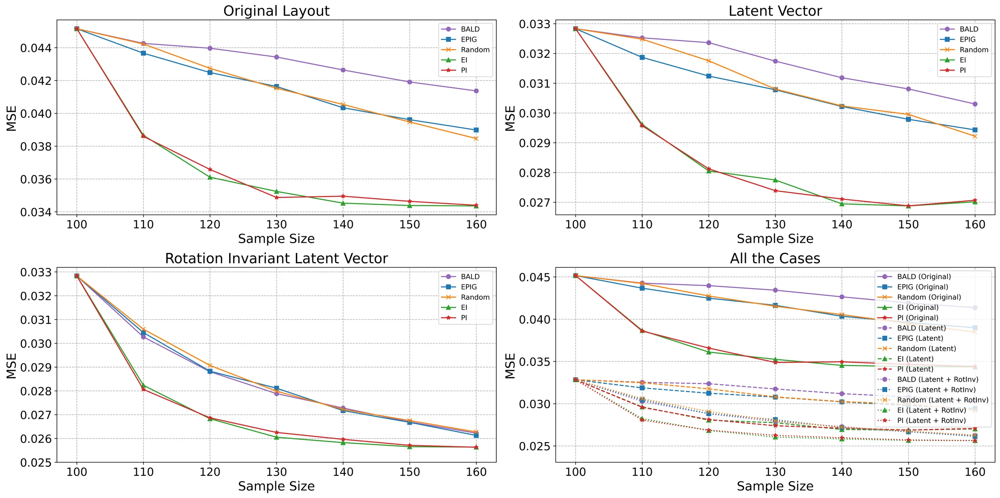
Fig. 1Surrogate error versus number of simulated layouts. Bayesian Active Learning for Qubit Layout Optimization, QCE 2026 (N. Jeon et al.), Fig. 3.
What can learning infer from partial quantum information?
Two related interests are learned decoding from error syndromes and estimation of a reduced density matrix \(\rho_A=\operatorname{Tr}_{\bar A}\rho\) from partial measurements. A state estimate must be positive and have unit trace; incomplete measurements need not identify a unique state.
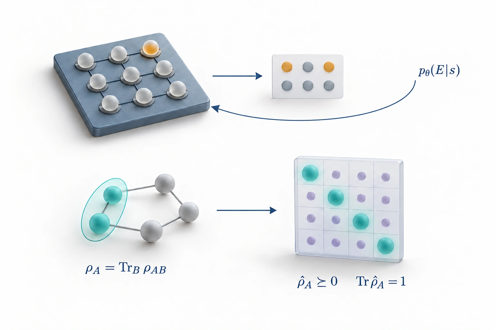
ConceptResearch interests: syndrome-based learned decoding and physical reduced-state estimation from partial information. Incomplete measurements may leave more than one compatible state.
§4Ongoing
Learned detector response and Monte Carlo simulation
Forward foundation model · ongoing collaboration with UConn
Can we learn what a detector will reconstruct?
QuantumMC Forward Foundation Model · UConn collaboration · ongoing
A particle-physics generator predicts truth-level final states; a detector records signals from which particle trajectories and identities must be inferred. Given a generated event, which outcomes would the detector and reconstruction produce? A forward model describes this conditional distribution, including its fluctuations.
GEMC/Geant4 follows particle transport and energy deposition. Digitization turns simulated hits into readout, and COATJAVA reconstructs particle candidates. With UConn collaborators, I am developing learned approximations to selected parts of this combined response, retaining the upstream physics generator.
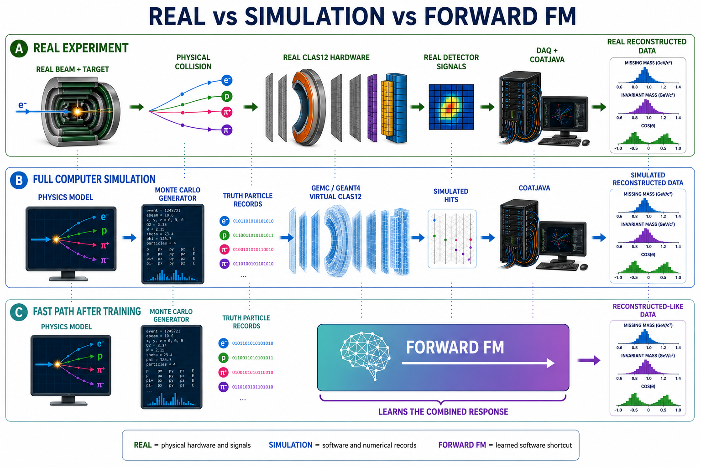
Fig. 2Experiment, full simulation, and a proposed learned forward response. The program targets the response after truth-event generation; the current study conditions on selected matched forward-detector reconstructions.
Which part of the physics prediction does the model replace?
Let \(X\in\mathcal X\) be a truth event, \(Y\in\mathcal Y\) a reconstructed outcome, and \(c\in\mathcal C_{\mathrm{det}}\) the detector conditions. Outcomes include missing or failed reconstructions. The end-to-end response is a probability kernel \(K\); \(\mathcal P(\mathcal Y)\) denotes probability measures on the outcome space:
\(h\) denotes simulated hits and \(d\) digitized readout. \(P_{\mathrm{gen}}\) is the truth-event probability law, with physics-model parameters \(\alpha\). Integrating the transport and digitization kernels propagates the truth event to reconstructed outcomes. A learned response approximates this detector factor while retaining \(P_{\mathrm{gen}}\).
The current study models kinematic residuals and reconstructed particle identity for selected, successfully matched forward-detector reconstructions. A conditional distribution is needed because detector smearing, response tails, and particle misidentification cannot be represented by a single corrected momentum.
The broader aim is a reusable forward response across particle species and detector conditions, with acceptance, reconstruction efficiency, and event correlations treated explicitly as the scope expands. These determine which generated particles appear in a reconstructed sample and how their measured distributions change.
Which distributions must a learned response preserve?
Validation compares reconstructed spectra, response tails, particle-identification patterns, and analysis observables against full simulation. Detector control data provide a further check on the simulation used as the learning target. Agreement at both stages is needed for a fast surrogate to support physics inference.
§5Quantum algorithms
Quantum circuits, observables, and geometry
Observable Geometry · ANO and DANO · quasi-polar analysis · transfer learning
Different circuits can produce the same transformed observable. For an \(n\)-qubit system, let \(N=2^n\), \(O\in\mathrm{Herm}(N)\), and \(U\in U(N)\). The measurement-operator map has an exact redundancy:
\(\mathrm{Herm}(N)\) is the space of Hermitian operators; \(m_j\) are the multiplicities of the distinct eigenvalues of \(O\). The stabilizer acts on the left.
Principal-bundle projection
\[ \pi(p\cdot g)=\pi(p),\qquad g\in G. \]
Observable redundancy
\[ F_O(SU)=F_O(U),\qquad S\in S_O. \]
Both maps are constant along their fibers. Here the gauge-like redundancy is relative to a chosen observable, rather than a local spacetime gauge symmetry. We use its stabilizer to identify effective circuit directions.
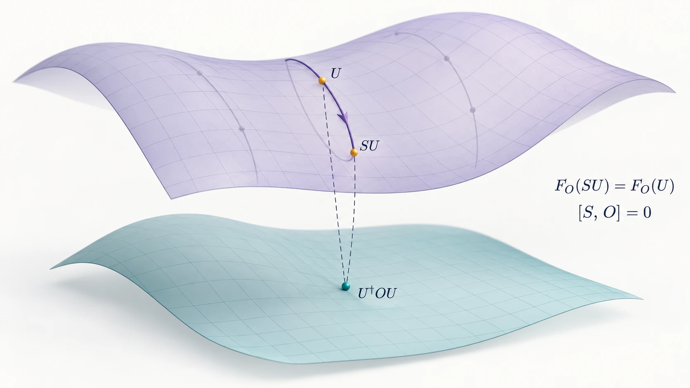
Fig. 3 · ConceptFor unitary \(S\) commuting with \(O\), \(U\) and \(SU\) lie on one fiber and project to the same observable \(U^\dagger OU\).
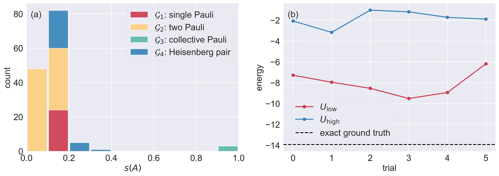
Fig. 4(a) Score \(s(A)\) by generator family; (b) VQE energy, \(U_{\text{low}}\) vs. \(U_{\text{high}}\), with exact \(E_0 \approx -13.92\). Observable Geometry, Fig. 2.
Why train only the circuit, rather than the observable?
Unitary conjugation changes an observable's basis but preserves its spectrum. ANO also learns the observable, allowing the model to move between spectral classes.
\(\rho_x\) is the encoded input state. The trainable Hermitian block \(H_\eta\) acts on \(k\) measured qubits; \(I\) acts on the remaining qubits. A general block has \(4^k\) real coefficients.
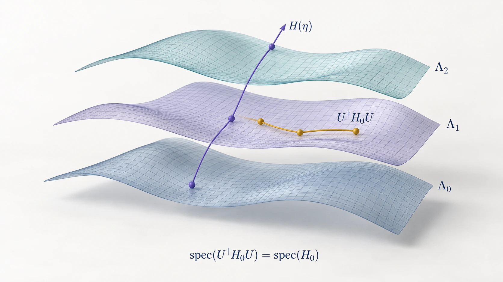
Concept\(\Lambda_0,\Lambda_1,\Lambda_2\) label distinct spectral classes. Unitary conjugation stays within one class; a learned Hermitian observable can change its spectrum.Original geometric diagrams: ANO, Figs. 2 and 3
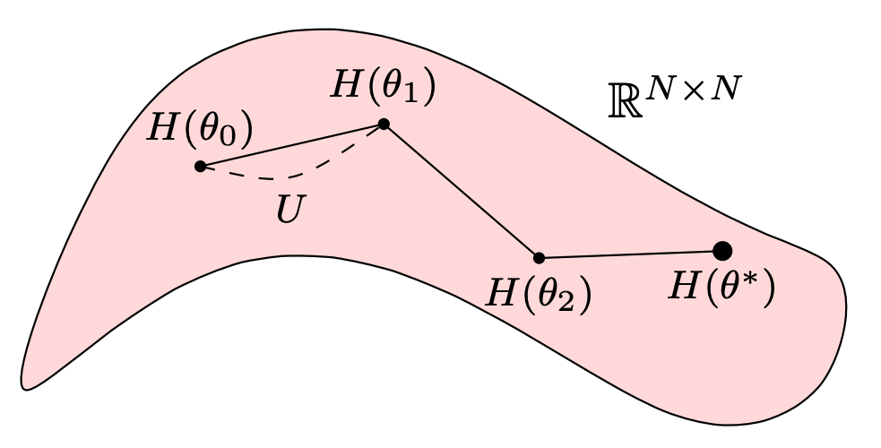
ANO, Fig. 2: circuit variation as a trajectory of conjugated observables.
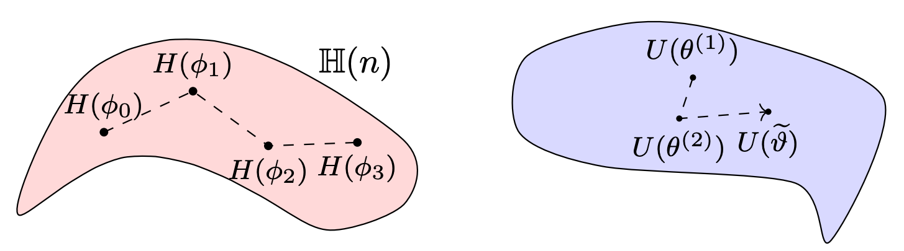
ANO, Fig. 3 poses the correspondence question. An observable change admits a unitary counterpart only when its spectrum is preserved. Source paper.
Can we learn the spectrum and let the circuit supply the basis?
The real spectral weights \(\lambda_j\) replace \(4^k\) observable coefficients with \(2^k\) diagonal coefficients. Basis rotations still require circuit resources; a fixed shallow ansatz need not represent every basis.
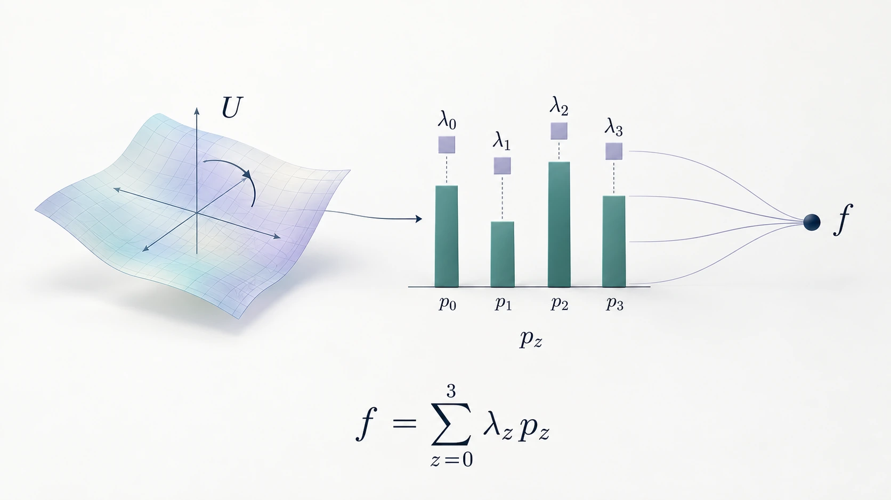
ConceptDANO combines a circuit-defined basis with learned diagonal weights. The four channels illustrate \(K=4\) basis outcomes, rather than four qubits. The weights are real and can have either sign.
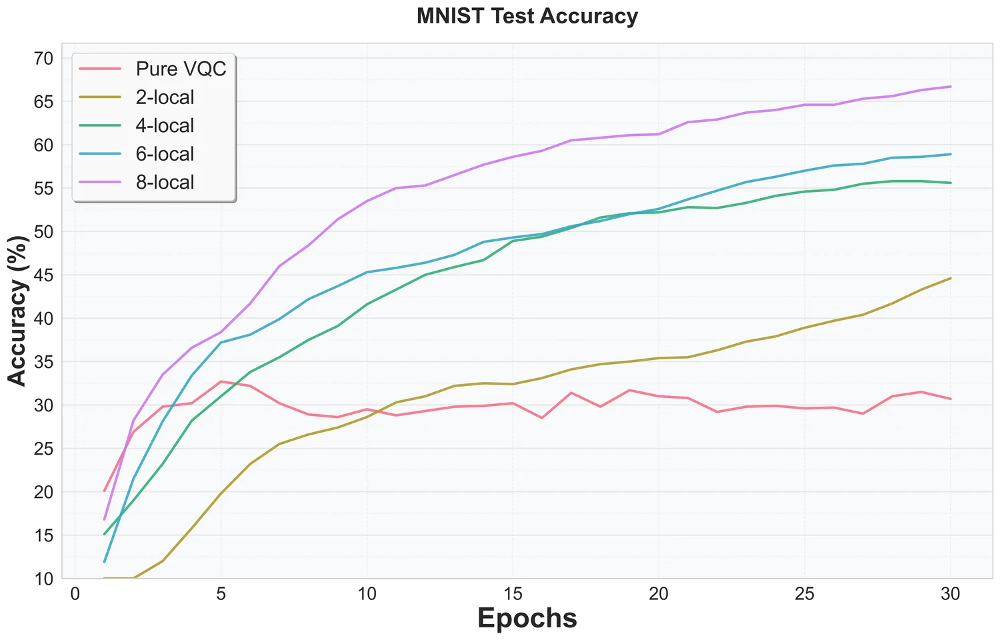
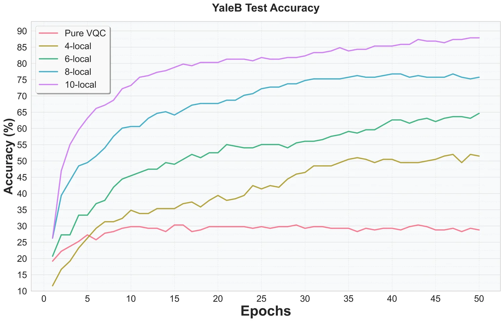
Fig. 5MNIST and Extended Yale B classification with different measured block sizes. DANO, Figs. 5 and 8. These comparisons use the finite circuit ansätze reported in the paper.
During training, does the model change its spectrum, its basis, or both?
Quasi-polar analysis follows the spectral and unitary coordinates of a learned observable. Along a smooth choice of basis, their contributions to its change separate:
\(t\) indexes training, not physical time. The first term changes the spectrum; the commutator changes the basis. Eigenbases and unitary logarithms are nonunique. This is a spectral-coordinate description, rather than the matrix polar decomposition.
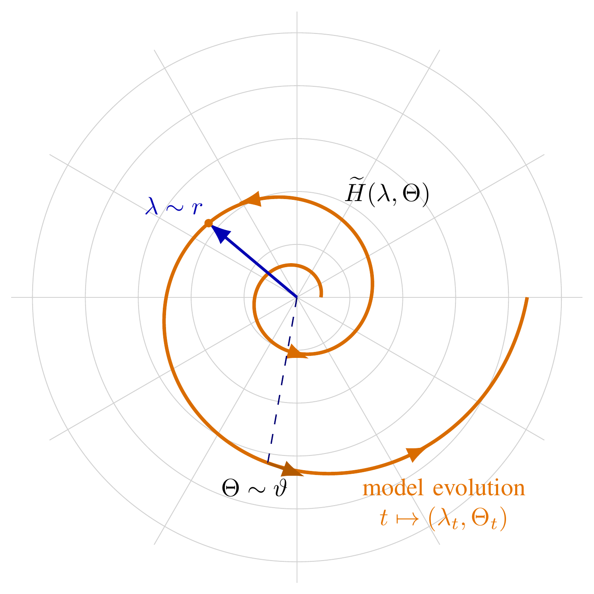
Paper · Fig. 1The spectrum \(\lambda\) and Hermitian generator \(\Theta\) play radial and angular roles in \(\widetilde H(\lambda,\Theta)\). The spiral illustrates training, \(t\mapsto(\lambda_t,\Theta_t)\). Source paper.
Can a pretrained quantum circuit adapt to a new task?
For nearby, aligned domains, Lie-algebraic response describes how input changes affect a pretrained circuit and how parameter changes can compensate. For Hermitian \(A\), with \(iA\in\mathfrak u(N)\), the local adjoint response is
\(J_x\) and \(J_\theta\) are the input and parameter Jacobians, stacked over aligned samples; \(J_\theta^+\) is the Moore–Penrose pseudoinverse. The update solves the linearized least-squares problem, under the local-response approximation.
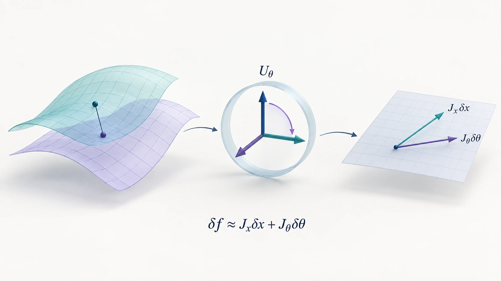
ConceptFor nearby, aligned domains, input and parameter changes affect the output through their Jacobians. The local correction follows the linearized analysis above.
§6Machine learning
Variational analysis, transport, and representation learning
Layer Variational Analysis · optimal transport · generalized SNE
Layer Variational Analysis studies the response of network layers to changes in data and model parameters. The analysis gives conditional error estimates and an analytical adaptation procedure. A local-response picture is
For \(f:\mathbb R^d\times\mathbb R^p\to\mathbb R^m\), the Jacobians map input and parameter perturbations to output changes. This first-order expression illustrates the response; the paper states the assumptions of its layer-wise analysis.
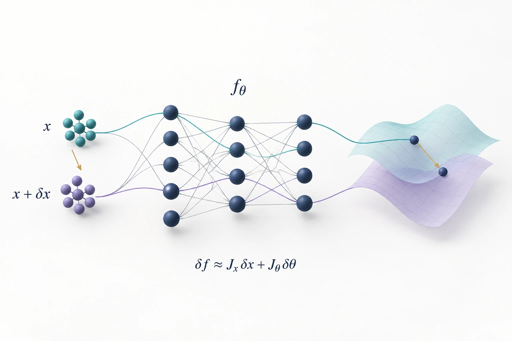
ConceptA domain shift propagates through the network. Layer response relates changes in inputs and parameters to changes in outputs.
\(\mu\) and \(\nu\) are probability-weight vectors, \(C\) is a pairwise cost matrix, and \(\gamma\) is a coupling. The paper adds a discriminator constraint to the adaptation objective.
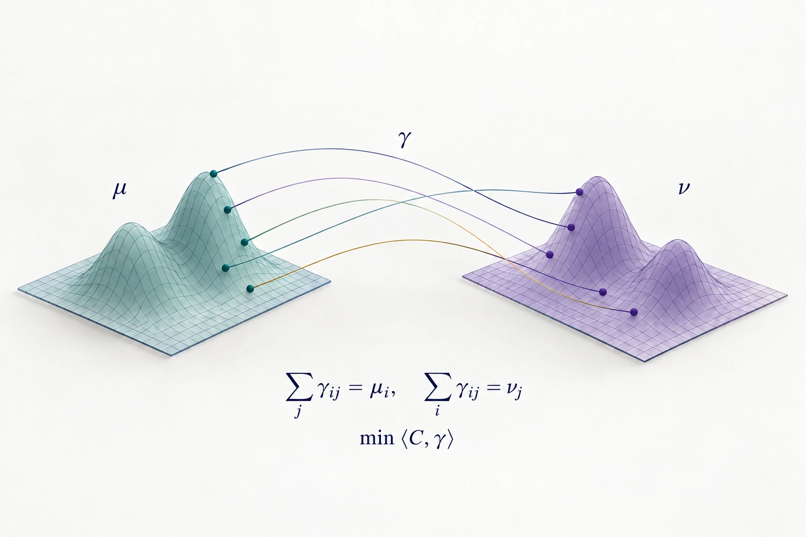
ConceptA coupling \(\gamma\) preserves the source and target marginals. The paper adds a discriminator constraint to the adaptation objective; the illustrated surfaces and paths are schematic.
The similarity metric, distribution kernel, and divergence determine the attraction and repulsion between embedded points. We derive these forces for generalized SNE:
\(y_i\) are latent points, \(\eta,\beta>0\), and \(Z\) normalizes the pairwise similarities. \(P\) and \(Q\) are source and embedding similarities. The expression shown uses Euclidean latent distance; the framework also studies more general metrics.
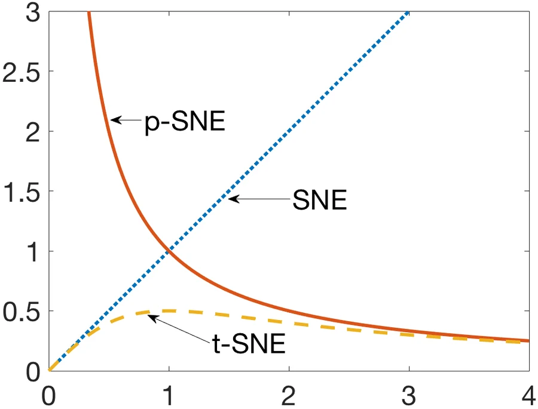
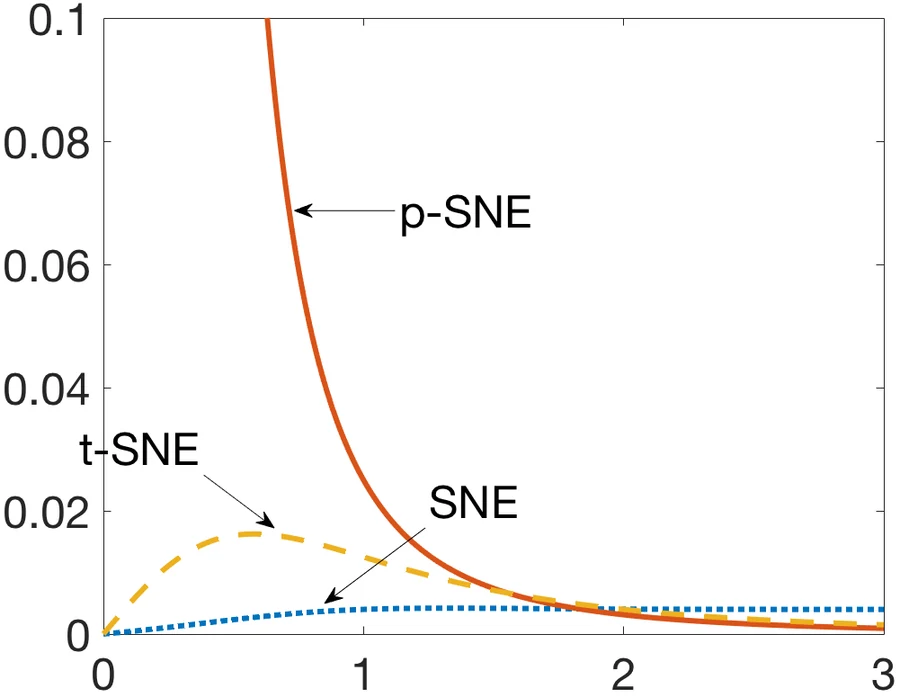
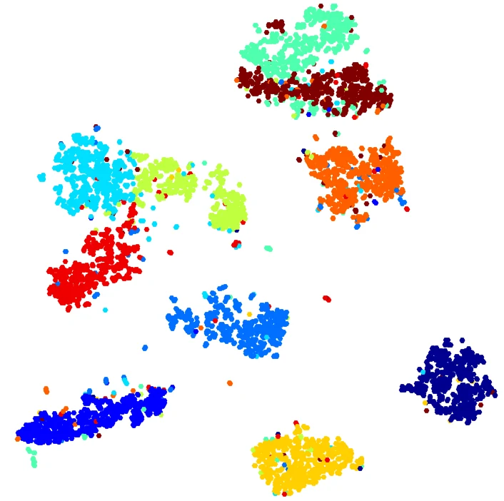
Fig. 7Attractive and repulsive forces for SNE, t-SNE, and p-SNE; an MNIST embedding with \(\beta = 1.8\). g-SNE, IEEE Access 2024.
Related work on INSURE studies information-based feature disentanglement and purification for domain generalization.
§7Foundation
Gauge geometry and spacetime
FoundationPh.D. dissertation (2015) and papers in JCAP, Phys. Rev. D, Class. Quantum Grav., and Phys. Lett. B — with C.-Q. Geng, C.-C. Lee, L.-W. Luo, and C. Lai.
My doctoral work studied gravity through gauge geometry. Connections, curvature, torsion, and variational principles gave me a way to move between geometric structure and physical dynamics — and they remain the language in which I think about the problems above. The dissertation builds Poincaré gauge theory from its fibre-bundle formulation to the resulting Riemann–Cartan spacetime, then studies theories descended from it.
From bundles to spacetime
In Poincaré gauge theory the coframe \(e^a\) and the Lorentz connection \(\omega^a{}_b\) are independent fields. Their field strengths are the curvature and torsion two-forms, given by Cartan’s structure equations; the action \(S[e, \omega, \psi] = \int_M L\) is varied with respect to each separately.
Frame indices \(a = 0,\dots,3\), \(\eta_{ab} = \mathrm{diag}(-1,1,1,1)\), and \(\omega_{ab} = -\omega_{ba}\) for a metric-compatible connection. The gauge group is the Poincaré group \(ISO(1,3) = \mathbb R^{1,3} \rtimes SO(1,3)\). Standard background, which the dissertation develops in full.
Scalar-torsion cosmology
I studied the cosmological dynamics of the scalar-torsion \(0^+\) mode in a quadratic Poincaré gauge model. In the positive-kinetic-energy case, the high-redshift analysis gives radiation-like asymptotic behavior for the effective torsion component:
\(a\) is the scale factor, \(\rho_T\) and \(p_T\) the effective torsion density and pressure. A property of the studied theoretical model, not an observational claim about dark energy.
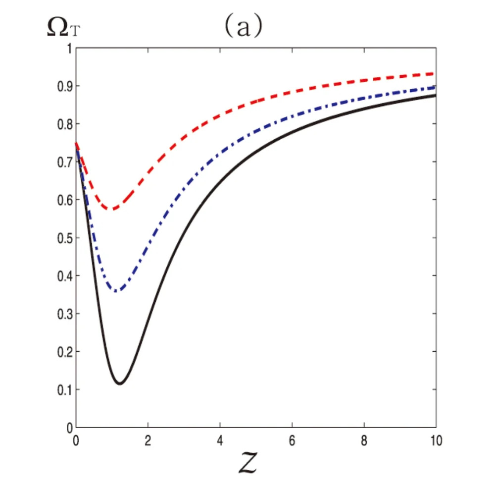
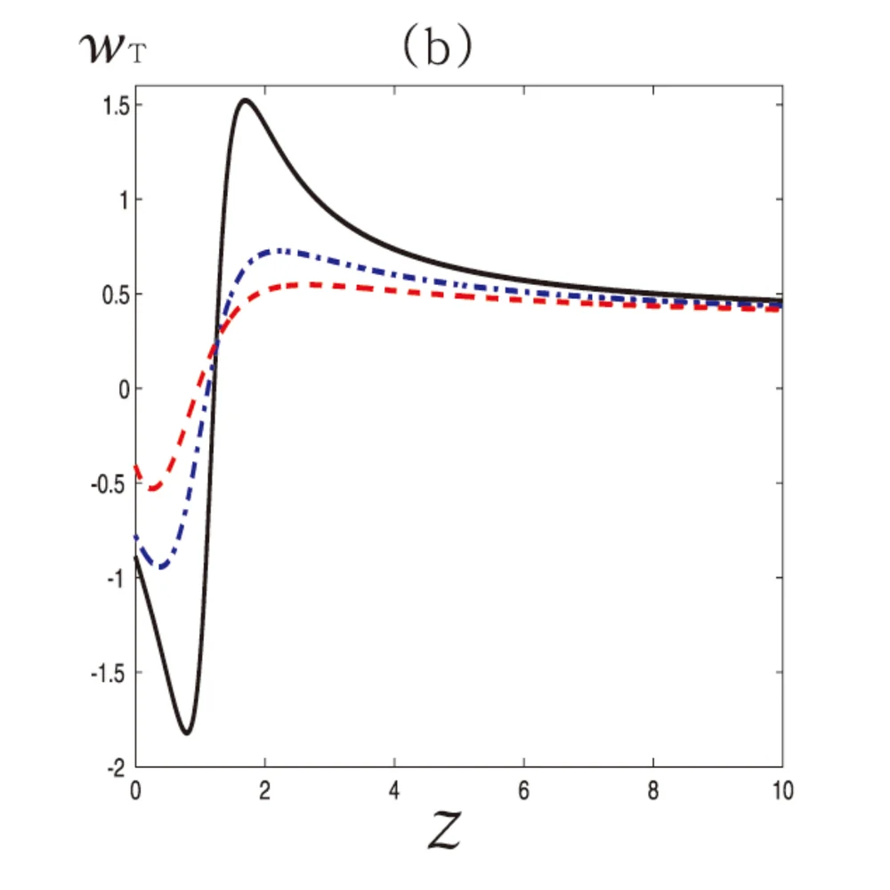
Fig. 9Torsion in an expanding universe. (a) Energy-density ratio \(\Omega_T\) and (b) equation of state \(w_T\) versus redshift, with \(\Omega^{(0)}_m = 25\%\) and \(\chi = 3.07\times10^{-4}\); three parameter sets \((\tilde a_0, \tilde a_1, \tilde H_0, \tilde R_0)\). Dissertation, Fig. 3.2.
Teleparallel gravity in five dimensions
Using differential forms, I studied five-dimensional teleparallel gravity and its dimensional reduction. The work compares braneworld and Kaluza–Klein constructions and identifies scalar–torsion couplings generated in the reduced theory.
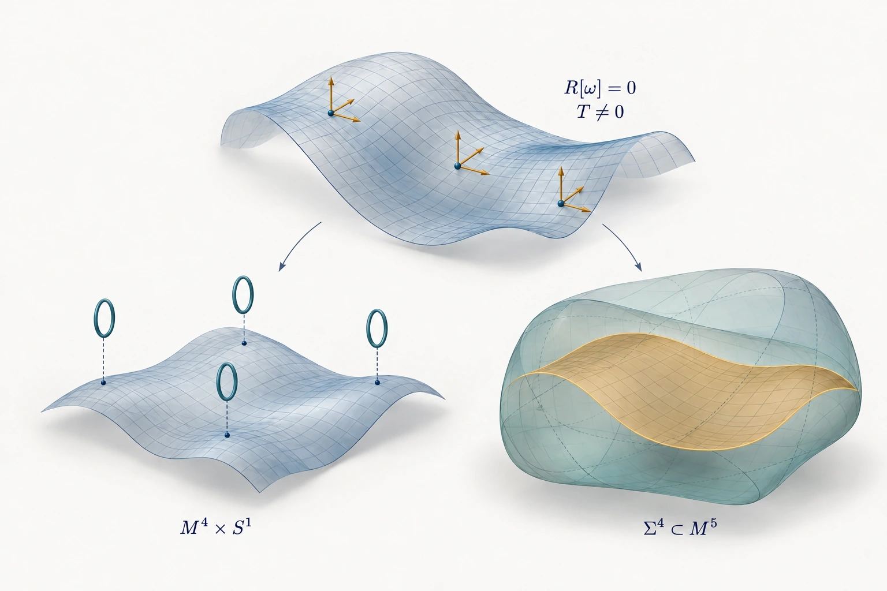
ConceptKaluza–Klein and braneworld reductions of a five-dimensional theory. Here \(R[\omega]=0\) refers to the teleparallel connection; the spacetime metric can still have nonzero Levi-Civita curvature.
The equations in the opening
The opening displays standard identities and field equations from David Bleecker’s Gauge Theory and Variational Principles: curvature, the Bianchi identity, matter-field variation, Yang–Mills and Einstein equations, and the bundle metric.
Stationarity of the self-action \(\mathcal S(g,\omega) = -\tfrac12 (gk)(\Omega^\omega, \Omega^\omega)\) in \(\omega\).
Thm 9.3.3 (A)V.Einstein field equation with gauge source
\[ \begin{gathered}
\underline R_{ij}-\tfrac12\underline R\,g_{ij}-\tfrac c2\,g_{ij}\\
=\tfrac12\,g^{hm}k(\Omega_{hi},\Omega_{mj})+\tfrac12\,\mathcal S(g,\omega)\,g_{ij}.
\end{gathered} \]
Stationarity of \(\int_U [\underline R(g) + \mathcal S(g,\omega) + c]\,\mu_g\) in the metric \(g\); \(k\) is an \(\mathrm{Ad}\)-invariant inner product on the Lie algebra.
The scalar curvature of the total-space metric decomposes into base curvature, gauge self-action, and fiber curvature. Here \(R_G\) is constant for the group metric used in this construction.
D. Bleecker, Gauge Theory and Variational Principles (Addison-Wesley, 1981; Dover reprint 2005). Equations newly typeset in the book’s notation; \(\underline R\) denotes the curvature functions of \(g\).
Variational-circuit approximations for high-dimensional parabolic PDEs, formulated through backward stochastic differential equations and tested in simulation.
Both settings distinguish a mathematical representation from the information it represents.
Gauge theory
A principal G-bundle over spacetime
A connection ω says how to lift paths; curvature \(\Omega^\omega\) is the failure of lifts around loops to close.
Observable geometry
The unitary group over the orbit of an observable
The measurement map is constant on fibres; only motion across them changes what is measured.
The shared structure is a projection that is constant along symmetry fibers. In observable geometry, the stabilizer of the chosen operator determines the quotient and its dimension. This is an operator-level redundancy: equality of a single state’s expectation value can introduce further, state-dependent degeneracies.
Method
Gravity foundation
Learning theory
Quantum program
Geometry
Bundles, coframes, curvature, torsion
Distribution geometry and embeddings
Observable orbits and effective circuit directions
Shared questions and methods across the three areas.
Fig. 10Connections between the research areas. Dashed arcs indicate particular methodological links; chapter labels link to the corresponding sections. The error-correction note (§1) develops the topology–symmetry connection; the forward-model project (§4) applies learning to detector response.
05 Publications
Selected publications and preprints
A selection across quantum computing, learning, and gravitation. The full bibliography is on Google Scholar.
Medical-physics work from the University of Michigan (2016–2019) and further speech and signal-processing papers are listed on Google Scholar.
06 Experience
Experience, service, and teaching
2023 — present
Research Scientist
Brookhaven National Laboratory, Upton, NY
Variational quantum algorithms and quantum computing; PI of the LDRD project on quantum-centric supercomputing.
2019 — 2022
Senior Postdoctoral Fellow
Academia Sinica, Taipei
Physical interpretations of transfer learning via variational analysis; quantum machine learning; neural beamforming.
2016 — 2019
Postdoctoral Fellow
University of Michigan, Ann Arbor, MI
Reinforcement learning for automated, response-adapted radiotherapy.
2015
Ph.D. in Physics
National Tsing Hua University, Hsinchu
Dissertation: Gravitational Theories with Torsion. Lecturer in General Physics, 2010–2013; teaching assistant for General Relativity and Theoretical Mechanics.
2005
B.S. in Mathematics
National Tsing Hua University, Hsinchu
Organizing
2026Quantum Machine Learning in Signal Processing and AI — ICASSP workshop
2025Quantum Computing and Reinforcement Learning — IEEE QCE workshop
2025Quantum ML in Signal Processing and AI — ICASSP workshop
2025Quantum Computing for Communications and Learning — IEEE WCNC workshop
2025Quantum ML for Communication Networks — IEEE ICC workshop
2024Quantum Computing and Reinforcement Learning — IEEE QCE workshop
2024Quantum Techniques for Signal Processing and ML — IEEE SiPS special session
2024QML Algorithms and Applications — IEEE ICMLA special session
Mentoring at Brookhaven
2025Cartan decompositions for circuit partitioning on quantum multichips; fault-tolerant VQCs with the Steane code
2024Quantum neural architecture search; quantum autoencoders for high-energy physics; RL for charged-particle beam control; hybrid quantum networks for signals and medical imaging